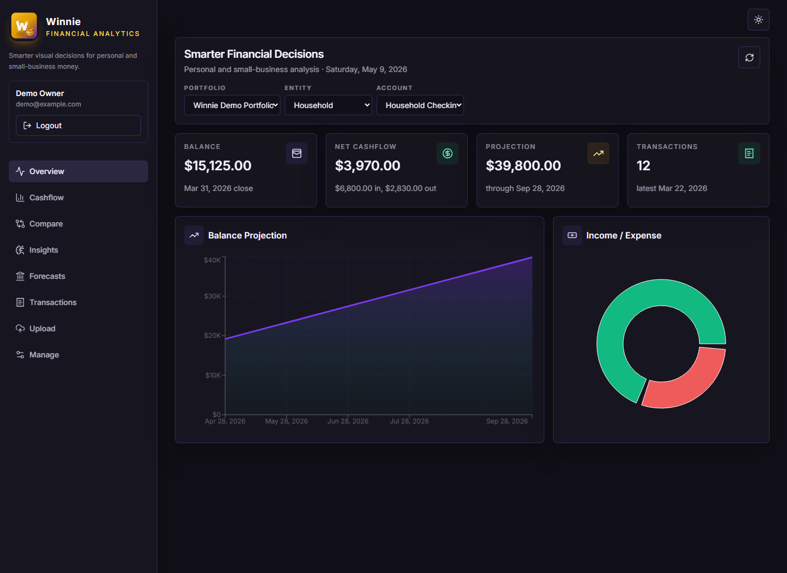
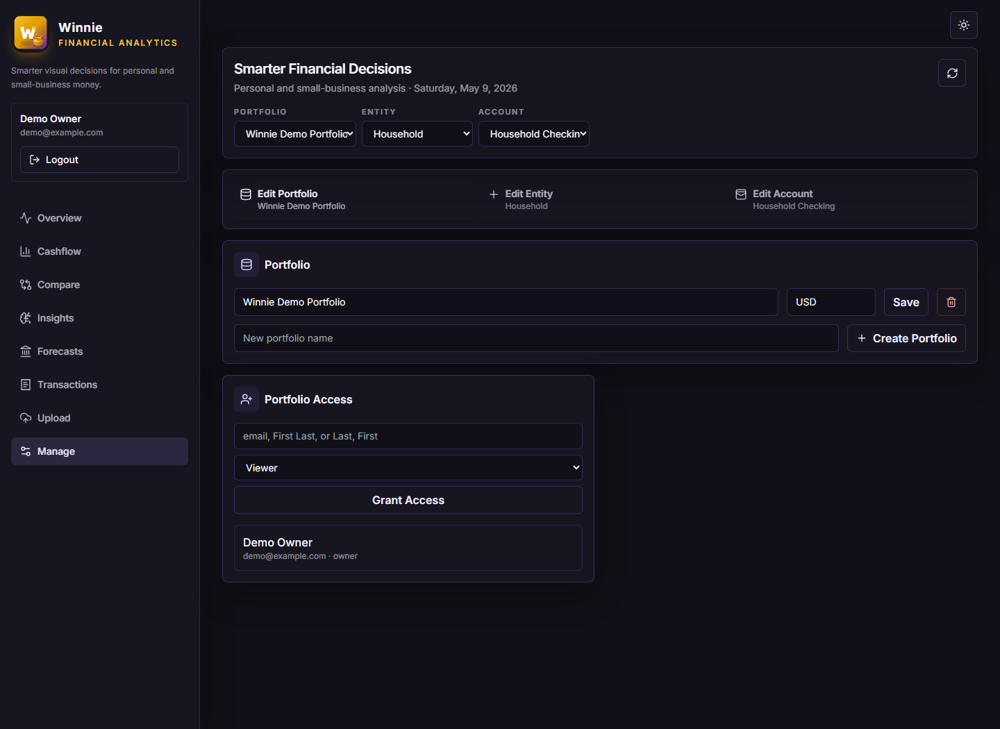
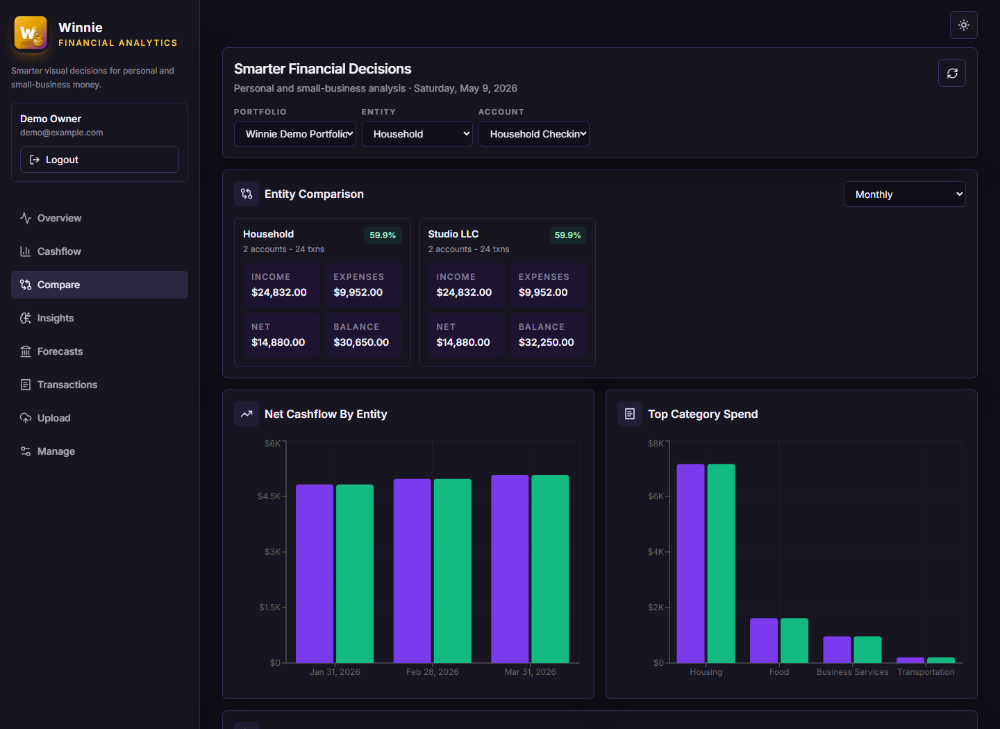

Upload and normalize
Parse CSV and PDF bank statements into a consistent transaction schema ready for analytics.
Portfolio intelligence for real decisions
Winnie turns statement uploads into visual cashflow, forecasts, entity comparisons, and scoped collaboration so you can understand where money moved and what may happen next.

Built around financial workflow
Parse CSV and PDF bank statements into a consistent transaction schema ready for analytics.
Use rolling averages, deltas, and projections to estimate future balances across useful periods.
See household, business, and other entities side by side across income, expenses, and trends.
Grant owner, stakeholder, or viewer access at the portfolio, entity, or account level.
Screenshots
Overview
See the selected portfolio, entity, or account with quick metrics and visual trend context.
Manage
Owners can create portfolios, entities, and accounts, then grant access exactly where it belongs.

Compare
Compare cashflow, category mix, balances, and insight summaries across entities.

Scoped collaboration
Winnie separates full ownership from contributor-style access and read-only views. Users only see and modify what they have been granted.
Full portfolio control, access management, and all entity/account operations.
Can work inside granted scope, including entities or accounts they own or were assigned.
Read-only dashboard access with no add, edit, remove, or grant actions.
Ready for V1
# Clone the repo:
git clone https://github.com/gorillablaster/winnie.git && cd winnie/deploy
# Edit the .env file to set your desired configuration:
cp .env.example .env
# Then run with Docker Compose:
docker login && docker compose --env-file deploy/.env -f deploy/docker-compose.yml up -dFor demo mode, set DEMO_DATA to true in .env.